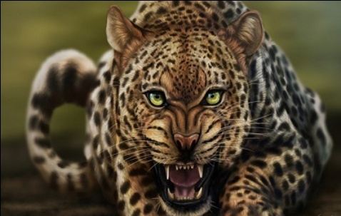
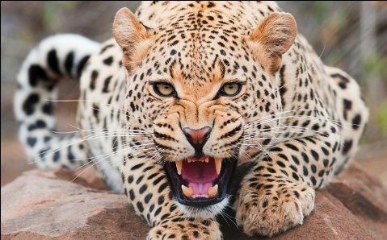

Гепард – самое быстрое сухопутное животное на планете. На коротких дистанциях он разгоняется до 100 км/ч меньше чем за три секунды, а в погоне способен держать скорость около 110 км/ч.
В отличие от других больших кошек, гепард не умеет рычать – он мурлычет, чирикает и издаёт звуки, похожие на птичьи. Тёмные «слёзные дорожки» от глаз к носу защищают его от солнечных бликов во время охоты.


Охотится гепард днём, когда крупные хищники – львы и гиены – отдыхают. Он выслеживает добычу, незаметно подкрадывается и настигает её коротким рывком, который длится не больше минуты.
Сегодня гепарды остаются под угрозой исчезновения: охота, потеря мест обитания и малое генетическое разнообразие сокращают их число. Сохранить вид помогают заповедники и международные программы.